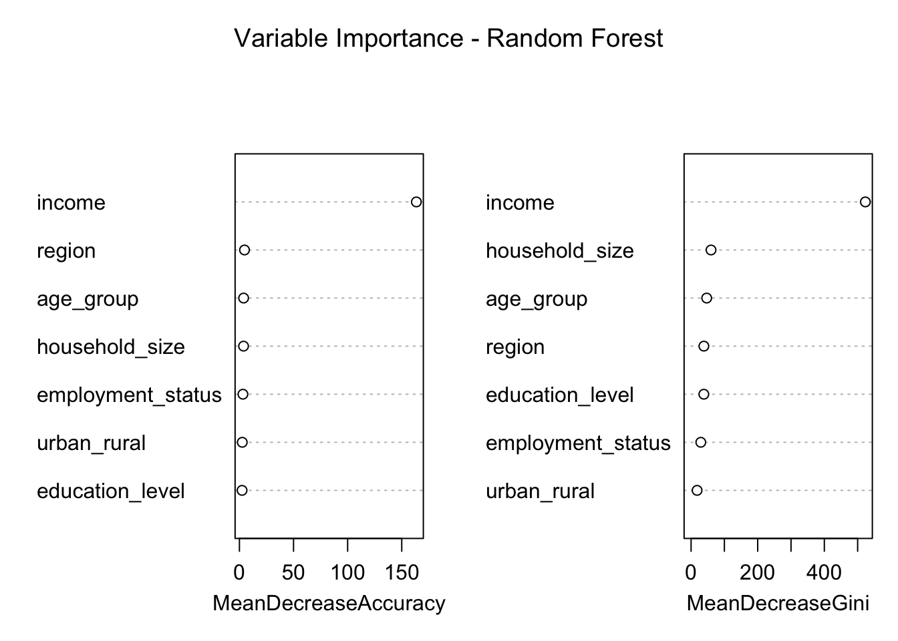

Household Income and Expenditure Patterns in Bangladesh
Author
Md Ariful Islam
Published
May 25, 2025
Executive Summary
This analysis explores household income and expenditure patterns in Bangladesh using a simulated dataset modeled after the Household Income and Expenditure Survey (HIES). The objective is to identify regional and demographic disparities, and model expenditure behavior using income and household characteristics.
# Simulate dataset.seed(2025)n <-3000df <-tibble(region =sample(c("Dhaka", "Chattogram", "Rajshahi", "Sylhet"), n, replace =TRUE),urban_rural =sample(c("Urban", "Rural"), n, replace =TRUE),household_size =sample(2:9, n, replace =TRUE),income =round(rnorm(n, mean =42000, sd =9000)),expenditure =round(income *runif(n, 0.55, 0.85)),age_group =sample(c("18-25", "26-35", "36-45", "46-60", "60+"), n, replace =TRUE),education_level =sample(c("No formal education", "Primary", "Secondary", "Higher"), n, replace =TRUE),employment_status =sample(c("Employed", "Self-employed", "Unemployed"), n, replace =TRUE))glimpse(df)
This analysis explores household income and expenditure patterns in Bangladesh using a simulated dataset modeled after the Household Income and Expenditure Survey (HIES). The objective is to identify regional and demographic disparities, and model expenditure behavior using income and household characteristics.
df_summary <- df %>%group_by(region, urban_rural) %>%summarise(mean_income =round(mean(income), 1),mean_expenditure =round(mean(expenditure), 1),mean_household_size =round(mean(household_size), 1),.groups ="drop" )kable(df_summary, caption ="Table 1: Summary by Region and Urban/Rural") %>%kable_styling(full_width =FALSE, bootstrap_options =c("striped", "hover"))
Table 1: Summary by Region and Urban/Rural
region
urban_rural
mean_income
mean_expenditure
mean_household_size
Chattogram
Rural
42996.0
30219.6
5.5
Chattogram
Urban
41772.7
28904.6
5.4
Dhaka
Rural
41998.6
29784.2
5.7
Dhaka
Urban
41606.0
29416.5
5.4
Rajshahi
Rural
41196.9
28686.7
5.6
Rajshahi
Urban
41742.8
29377.3
5.5
Sylhet
Rural
42664.5
30002.3
5.5
Sylhet
Urban
43121.7
30183.7
5.4
Descriptive Statistics
We begin by summarizing the dataset using basic descriptive statistics, followed by grouped summaries by region and urban/rural classification.
2 Pearson’s Chi-squared test; Wilcoxon rank sum test
Visual Analysis
Income vs Expenditure by Region
df %>%pivot_longer(cols =c(income, expenditure), names_to ="type", values_to ="amount") %>%group_by(region, type) %>%summarise(mean_amount =mean(amount), .groups ="drop") %>%ggplot(aes(x = region, y = mean_amount, fill = type)) +geom_col(position ="dodge") +labs(title ="Mean Income and Expenditure by Region", y ="Amount (BDT)", x ="") +theme_minimal(base_size =13)
Urban vs Rural Expenditure Comparison
df %>%ggplot(aes(x = urban_rural, y = expenditure, fill = urban_rural)) +geom_boxplot(alpha =0.7) +labs(title ="Household Expenditure: Urban vs Rural",y ="Expenditure (BDT)", x ="") +theme_minimal(base_size =13)
Regression Analysis
We model household expenditure as a function of income, region, urban/rural status, and household size:
model <-lm(expenditure ~ income + household_size + region + urban_rural, data = df)tidy(model) %>%kable(caption ="Table 2: Regression Results") %>%kable_styling(full_width =FALSE, bootstrap_options =c("striped", "hover"))
Table 2: Regression Results
term
estimate
std.error
statistic
p.value
(Intercept)
-424.0667355
389.9708118
-1.0874320
0.2769335
income
0.7089587
0.0075216
94.2564140
0.0000000
household_size
-3.0146958
29.6868654
-0.1015498
0.9191208
regionDhaka
453.8053265
193.3437418
2.3471426
0.0189828
regionRajshahi
125.3581562
194.2438947
0.6453647
0.5187403
regionSylhet
173.6036385
191.2052006
0.9079441
0.3639808
urban_ruralUrban
-98.4725297
136.7113499
-0.7202952
0.4713995
Decision Tree Model Analysis
# Create a new variable to predict: High expenditure (1 if expenditure > 35000, else 0)df$high_expenditure <-ifelse(df$expenditure >35000, 1, 0)trainIndex <-createDataPartition(df$high_expenditure, p =0.8, list =FALSE)trainData <- df[trainIndex, ]testData <- df[-trainIndex, ]# Build the decision tree modeltree_model <-rpart(high_expenditure ~ region + urban_rural + household_size + income + age_group + education_level + employment_status, data = trainData, method ="class")# Improved visualization using rpart.plotrpart.plot(tree_model, type =3, extra =101, fallen.leaves =TRUE, main ="Decision Tree for High Expenditure Prediction")
# Make predictions on the test setpredictions <-predict(tree_model, testData, type ="class")# Evaluate the model performanceconf_matrix <-confusionMatrix(predictions, as.factor(testData$high_expenditure))print(conf_matrix)
Confusion Matrix and Statistics
Reference
Prediction 0 1
0 435 69
1 27 69
Accuracy : 0.84
95% CI : (0.8082, 0.8684)
No Information Rate : 0.77
P-Value [Acc > NIR] : 1.436e-05
Kappa : 0.4943
Mcnemar's Test P-Value : 2.857e-05
Sensitivity : 0.9416
Specificity : 0.5000
Pos Pred Value : 0.8631
Neg Pred Value : 0.7188
Prevalence : 0.7700
Detection Rate : 0.7250
Detection Prevalence : 0.8400
Balanced Accuracy : 0.7208
'Positive' Class : 0
Random Forest Model Analysis
# Target variabledf$high_expenditure <-as.factor(ifelse(df$expenditure >35000, 1, 0)) # classification targettrainIndex <- caret::createDataPartition(df$high_expenditure, p =0.8, list =FALSE)trainData <- df[trainIndex, ]testData <- df[-trainIndex, ]# Fit Random Forest modelrf_model <-randomForest( high_expenditure ~ region + urban_rural + household_size + income + age_group + education_level + employment_status,data = trainData,importance =TRUE,ntree =500)# Make predictionsrf_predictions <-predict(rf_model, testData)# Confusion Matrixrf_conf_matrix <- caret::confusionMatrix(rf_predictions, testData$high_expenditure)print(rf_conf_matrix)
Confusion Matrix and Statistics
Reference
Prediction 0 1
0 435 54
1 26 85
Accuracy : 0.8667
95% CI : (0.8368, 0.8928)
No Information Rate : 0.7683
P-Value [Acc > NIR] : 9.54e-10
Kappa : 0.5971
Mcnemar's Test P-Value : 0.002539
Sensitivity : 0.9436
Specificity : 0.6115
Pos Pred Value : 0.8896
Neg Pred Value : 0.7658
Prevalence : 0.7683
Detection Rate : 0.7250
Detection Prevalence : 0.8150
Balanced Accuracy : 0.7776
'Positive' Class : 0
# Variable Importance PlotvarImpPlot(rf_model, main ="Variable Importance - Random Forest")

ROC curve
# Decision Treetree_probs <-predict(tree_model, testData, type ="prob")[,2] # Probabilities for class 1# Random Forestrf_probs <-predict(rf_model, testData, type ="prob")[,2] # Probabilities for class 1# Create ROC objectsroc_tree <-roc(testData$high_expenditure, tree_probs)roc_rf <-roc(testData$high_expenditure, rf_probs)# Plotplot(roc_tree, col ="blue", main ="ROC Curve Comparison", print.auc =TRUE, legacy.axes =TRUE)plot(roc_rf, col ="darkgreen", add =TRUE, print.auc =TRUE, print.auc.y =0.4)legend("bottomright", legend =c("Decision Tree", "Random Forest"),col =c("blue", "darkgreen"), lwd =2)
Key Findings
Households in urban areas tend to have higher expenditures.
Expenditure is strongly and positively associated with income and household size.
Regional disparities suggest lower average spending in Rajshahi compared to Dhaka.
Conclusion
This simulated HIES-style report highlights regional and structural differences in household spending behavior. Future steps could include poverty line estimations, Lorenz curve analysis, or policy scenario simulations.